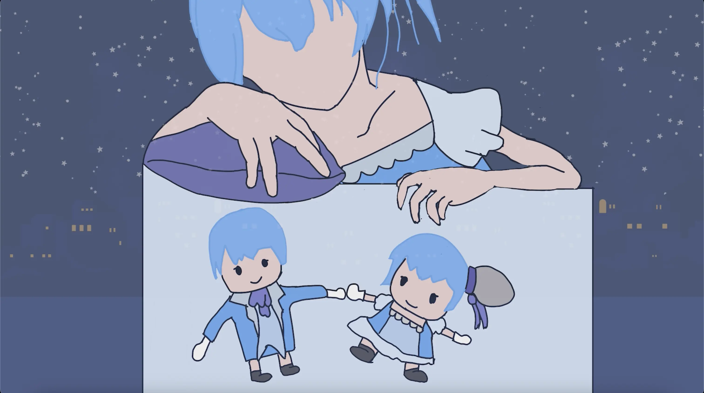
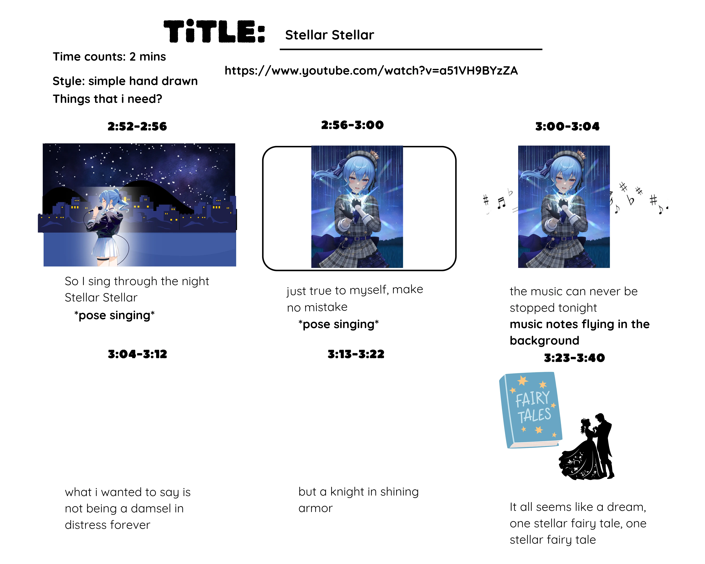
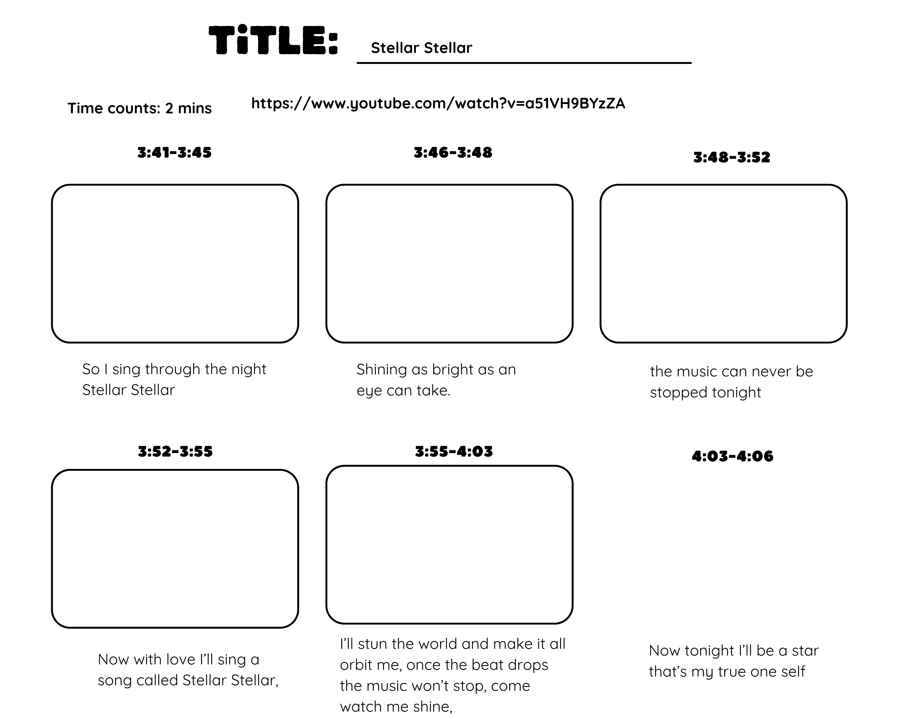
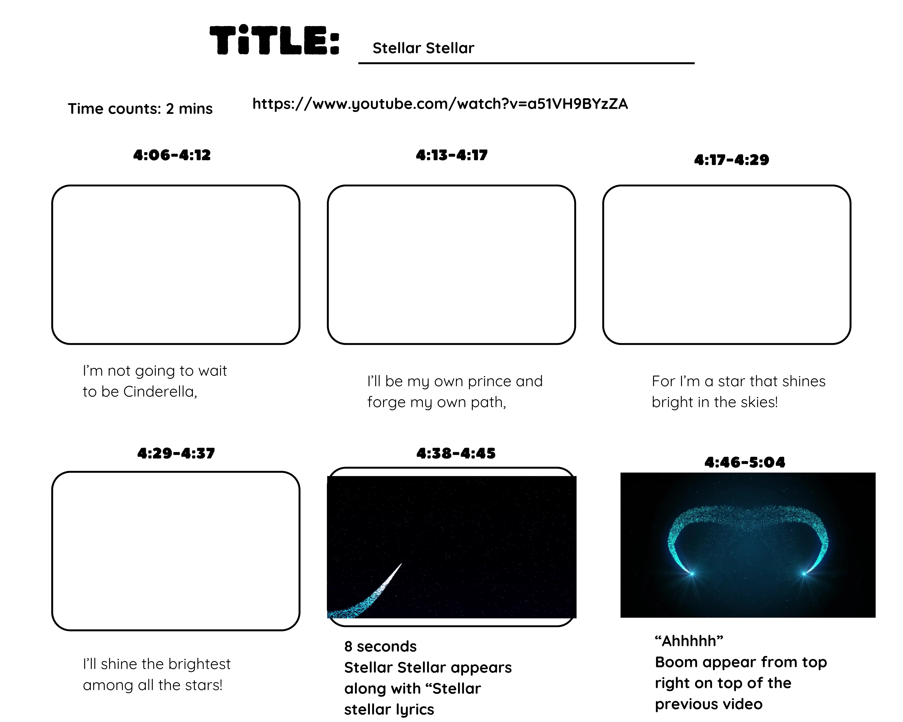
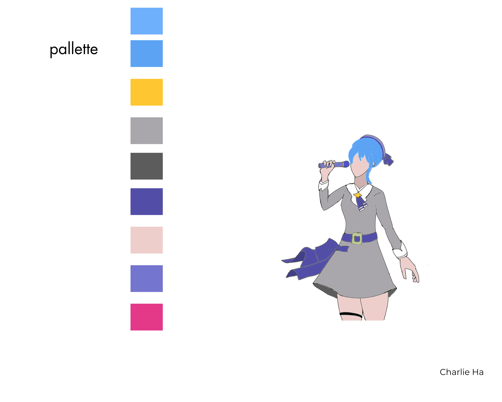

Project type:
A fan made Music Video.
Credit:
作詞 : 星街すいせい, 作曲 : TAKU INOUE, 編曲 : TAKU INOUE, Producer：TAKU INOUE, Mixing Engineer：TAKU INOUE, Mixing Studio：Midorino Studio, Violin : CHICA, Cello : 篠崎由紀, Trumpet : 奥村晶, Trombone : 半田信英, Alto Sax : 今尾敏道, 字幕制作：fts, T-chan
English translation: Ivan Ruski.
Project description:
This project, I crafted a captivating music video utilizing my skills in creative editing, and sound mixing. Understand that music videos often blend narrative storytelling with montage techniques.
I chose the song Stellar Stella because it has storytelling elements that I can present visually and the official music video has a lot of potential to push the song further.
Date:
February 17 - March 2, 2025
Role:
Video Editor and Visual Artist.
Project highlight:
Fan Made Music Video:
Please choose 720p for highest quality.
Story board and Color Palette:



